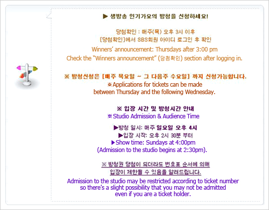
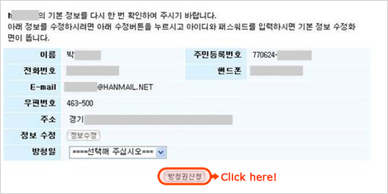

Inkigayo SBS Station TV
KPOP Music Shows: How to Apply for Tickets
As Korean K-pop continues to spread worldwide, there have been an increasing number of inquiries on how to take part in TV music programs produced by major broadcasting companies in Korea.
Music programs are incredibly popular since audience members can see a number of their favorite singers perform all in one place. One big bonus is that, unlike concerts, tickets are free to those who apply online and are picked in the lucky draw. Let’s take a look at how you too can apply for tickets from each broadcasting company and attend some of your favorite TV music shows!
SBS Live K-POP Countdown (Ingigayo)
1. To apply to be part of the studio audience of the Ingigayo program broadcast live on SBS you must first sign up on the official site of SBS (Seoul Broadcasting Station). You will need your alien registration card (issued in Korea) and your alien registration number. It is best if you can speak some Korean or if you can receive help with translation of the procedure and results.
>> Go to Member Sign-up Page
2. Once you connect to the SBS Ingigayo website (http://tv.sbs.co.kr/gayo/), you will need to click on the “Studio Audience Application” (방청신청), the fourth menu item down on the left-side of the main page.
Clicking on the “Studio Audience Application” (방청신청) option will connect you to a new page prompting you to log in. Type in your membership ID and password, and you will be led to the screen pictured below:


Once you sign up on the SBS website, your membership information is saved in the ticket application page for your convenience. Simply check your personal information, choose the desired studio date, and click on the “Apply for Ticket” (방청권신청) button. Tickets are given in sets of two and the winners’ announcement can be checked on the Inkigayo website every Thursday after 3:00 pm.
You may print your ticket from the pop-up winners’ announcement notice if you have been selected as a ticket winner. You must present your ticket and ID at the studio on the day of the show in order to be admitted.
Ticket holders who visit the SBS open hall in Deungchon-dong on Sundays before filming will be admitted to the studio starting from 2:30 pm. Admission and seating closes by 3:30 pm.
* Please note that all audience members must be 13 years of age or older. Photography and videotaping is strictly forbidden during the show. Any audience member caught taking photos or videos may be asked to leave the studio.
Address
Seoul-si, Gangseo-gu, Deungchon-dong 58-1
Telephone
02-2061-0006
Directions
Gayang Station (Seoul Subway Line 9), Exit 10
Studio Audience Information Website:
http://wizard2.sbs.co.kr (Korean)